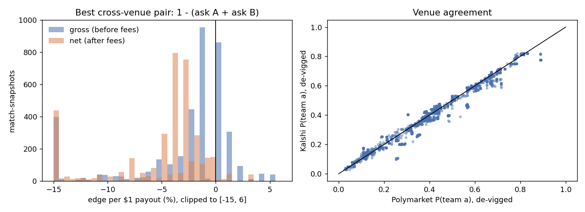
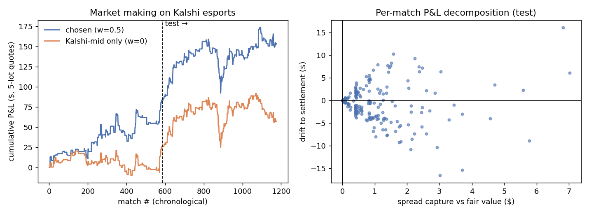
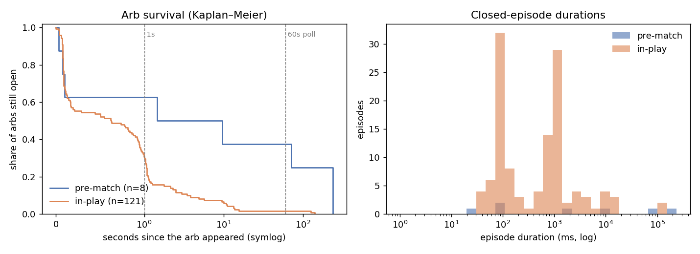
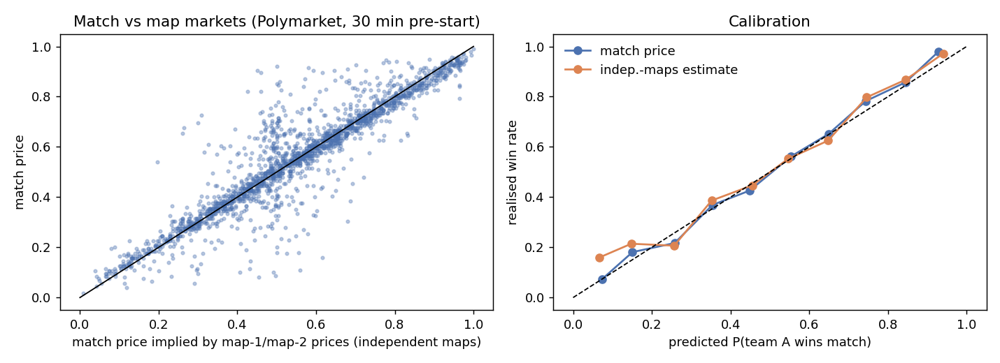

Four studies of the same market: cross-venue arbitrage, market making, how fast mispricings disappear, and whether the match, map, handicap and totals markets agree with each other. Every result comes from real order books, the public trade tape and actual settlements.
A head-to-head esports match has two outcomes, so a contract paying $1 if team A wins and a contract paying $1 if team B wins together pay exactly $1. Everything here follows from that, plus each venue's fee schedule.
| Venue | Data | Taker fee |
|---|---|---|
| Kalshi | REST + websocket books, public trade tape, 1-min candles | 7% × p(1−p) |
| Polymarket | Gamma + CLOB websocket books | 5% × p(1−p) |
| Sportsbooks | OddsPapi aggregator, or pasted odds | in the odds |
Both exchange fees scale with the variance of the payoff, so they peak at 50c and shrink at the extremes. A pair of 50c legs needs about 3c of mispricing to clear fees.
45 snapshots a minute apart, 87 matches quoted on both Kalshi and Polymarket.

Left: the best cross-venue pair per match-snapshot, before and after fees. Right: the two venues agree closely on who wins, and differ mostly on thin markets.
The arbitrages that survive fees sit at the top of very thin books — usually one contract, below Polymarket's five-share minimum. Most net-positive pairs used Kalshi's NO contract on the opponent rather than YES on the team, so a scanner that only checks YES prices misses them.
Kalshi charges no maker fee on esports, so resting orders that fill cost nothing. The maker quotes around a fair value that blends Kalshi's and Polymarket's mids, skews against inventory, and never trades in play. Settings were chosen on 588 matches and tested once on the next 589, replayed against Kalshi's real trade tape.

Left: cumulative P&L, with the out-of-sample half to the right of the dashed line. Right: each match's spread capture against its drift to settlement.
| Minutes before start | Spread earned | Adverse selection | Net |
|---|---|---|---|
| 360–720 | +8.5c | −5.6c | +2.9c |
| 120–360 | +8.4c | −5.7c | +2.8c |
| 30–120 | +8.4c | −14.6c | −6.2c |
| 0–30 | +8.5c | −10.3c | −1.8c |
The spread earned is the same all day; what changes is who is trading. Inside two hours of the start, the flow knows something — lineups, stand-ins, late news — and takes roughly twice the spread back. Not quoting after T−120 minutes was the single largest improvement in the study.
Live order books over websockets, re-checking only the match whose book changed — about 33 microseconds per update, keeping up with 300–440 Polymarket messages a second. Each arbitrage is logged as an episode with a millisecond lifetime.

Left: share of arbitrages still open over time, pre-match against in-play. Right: how long the closed ones lasted.
Durations cluster in two groups. The one-second group matches the Kalshi refresh interval during live matches: Polymarket reprices first and the gap lasts until Kalshi is polled again, which is stale-quote latency rather than tradable edge. Pre-match episodes are rarer, a few contracts deep, and some last minutes. Polymarket moves first in nearly every case, which is why it anchors the maker's fair value.
A best-of-three ends in one of six map sequences, so every match, map, handicap and totals contract is a payoff vector over those six. A linear program searches both venues for the cheapest basket that pays at least $1 in every sequence; under $1 after fees is an arbitrage rather than a forecast.

2,273 settled best-of-threes, priced 30 minutes before the start. The match market is the best-calibrated contract on the board.
The Dota 2 basket above priced "Dawn Bulls 2-0" at about 50% while pricing "Dawn Bulls win at all" at about the same, which implies a 2-1 win cannot happen. Betting the handicap mispricing returned +22.6c per bet out of sample at midpoint prices, but only 8 of 107 signals had a real trade on the needed side before the match: those books are mostly empty. That points at resting limit orders rather than taking.